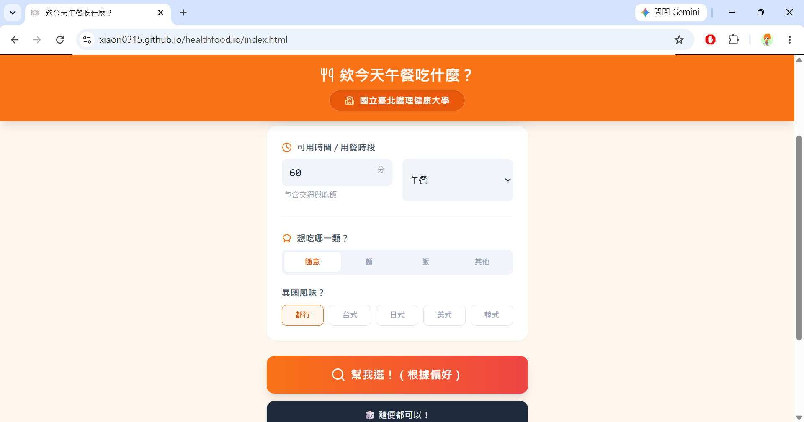
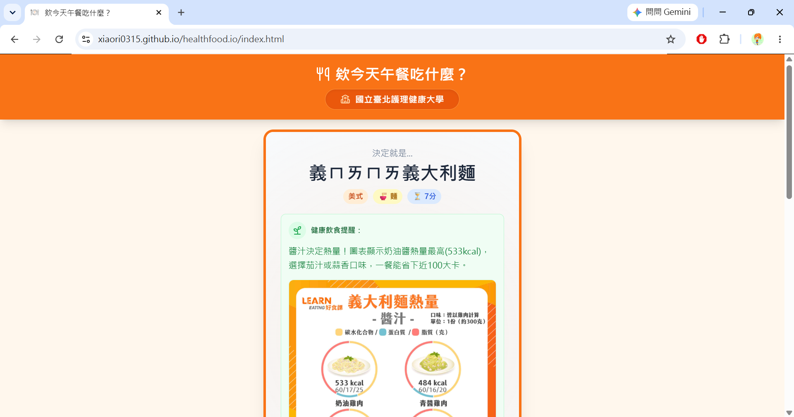
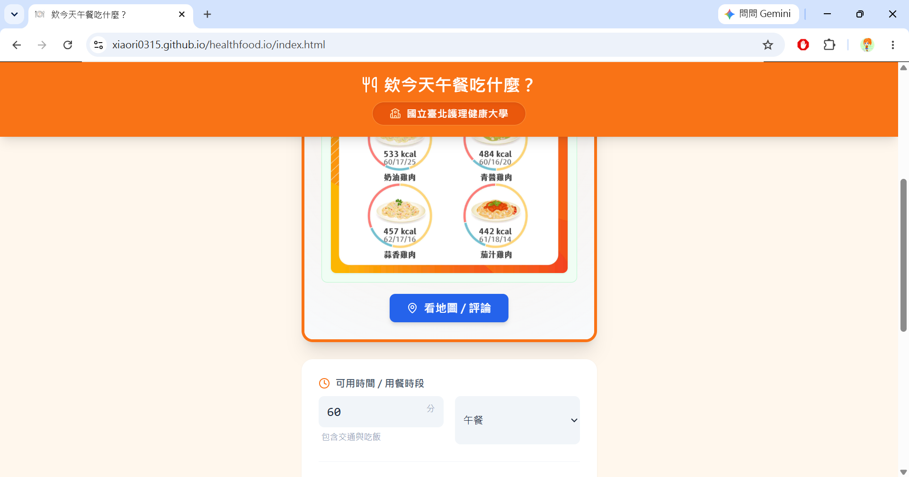
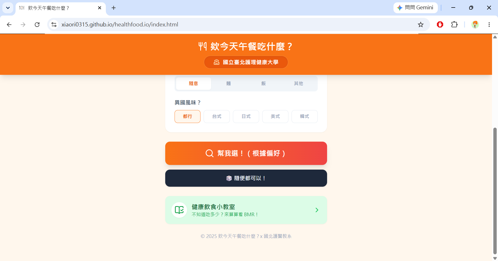
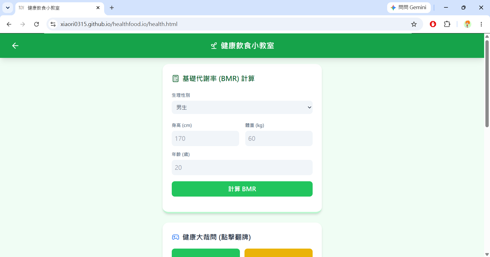
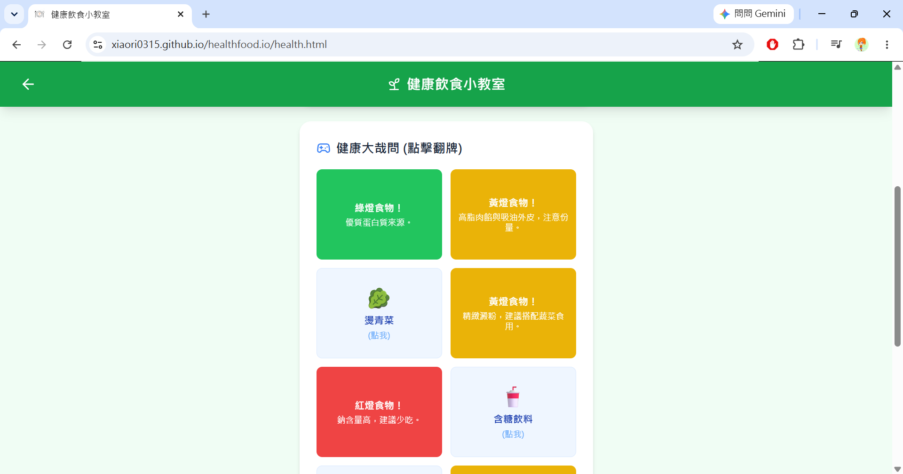

針對學生族群日常外食選擇障礙設計的實用互動工具。不僅能設定條件或一鍵隨機抽籤，還整合了店家飲食提醒、Google 地圖導航、BMR 計算器與翻牌衛教小遊戲，兼顧便利性與營養衛教。

收集學校周邊各式餐飲店家，支援自訂條件篩選（如餐點類型、預算）或直接一鍵隨機抽取，輕鬆解決用餐選擇障礙。

依據抽選出的店家種類（如便當店、麵食、炸物等）即時提供針對性的飲食衛教提醒，引導避開高鈉或高油脂陷阱。

抽籤結果出爐後，使用者可一鍵點擊外開 Google 地圖，即時查看店家營業狀態、最新評價與前往路線。

在抽籤頁面底部設置專屬捷徑入口，引導對日常飲食調理、熱量控制感興趣的使用者深入探索健康衛教專區。

輸入性別、年齡、身高與體重，系統自動試算個人的每日基礎代謝率，作為每日熱量攝取與餐點挑選的科學依據。

以紅黃綠燈食物為概念的翻牌問答小遊戲，點擊卡片即可查看餐點分類與營養評析，在互動中建立健康的挑食與代換概念。